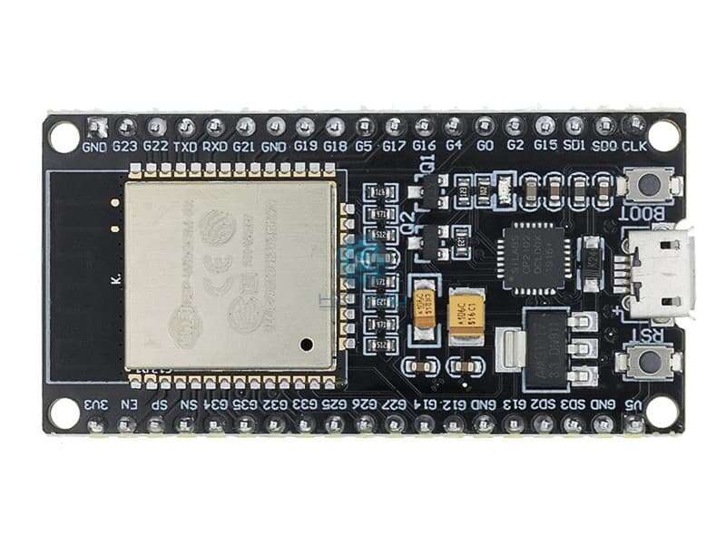

¿QUÉ ES?
El ESP32 es un microcontrolador más avanzado que Arduino, desarrollado por Espressif Systems. Integra Wi-Fi y Bluetooth en un solo chip, lo que lo hace ideal para proyectos IoT.
Ventajas del ESP32 frente al Arduino:
- Procesador de doble núcleo y mayor velocidad.
- Conectividad inalámbrica integrada (no necesita módulos extra).
- Más memoria y mayor cantidad de pines de entrada/salida.
Ejemplos de proyectos con ESP32:
- Estación meteorológica que envía datos a internet.
- Control de luces desde el celular vía Wi-Fi.
- Cámara de vigilancia pequeña conectada por Wi-Fi.
ESP32 es muy usado en proyectos profesionales de domótica, agricultura inteligente e industria.